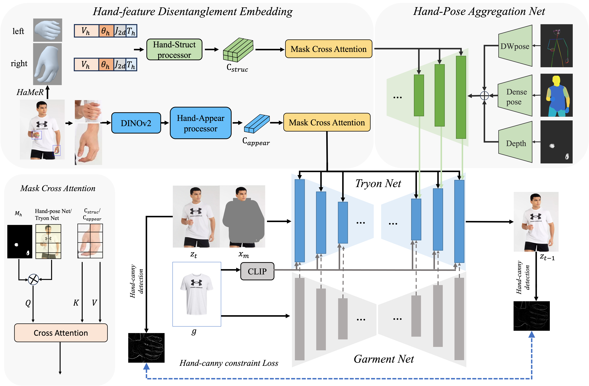

Method
An overview of our VTON-HandFit Network. The network consists of two main components: Hand-feature Disentanglement Embedding and Hand-Pose Aggregation Net. The Hand-feature Disentanglement Embedding module uses the HaMer model to extract hand priors, including hand type \( T_h \), 3D vertices \( V_h \), spatial joint locations \( J_{2d} \), and joint rotation matrices \( \theta_h \). These features are processed by the Hand-Struct processor to derive structural features \( c_{struc} \). Simultaneously, hand images cropped using bounding boxes are processed by DINOv2 and the Hand-Appear processor to obtain visual features \( c_{appear} \). The structural and visual features are integrated using mask cross attention. The Hand-Pose Aggregation Net module controls body and hand poses by aggregating DWpose, Densepose, and hand depth maps.